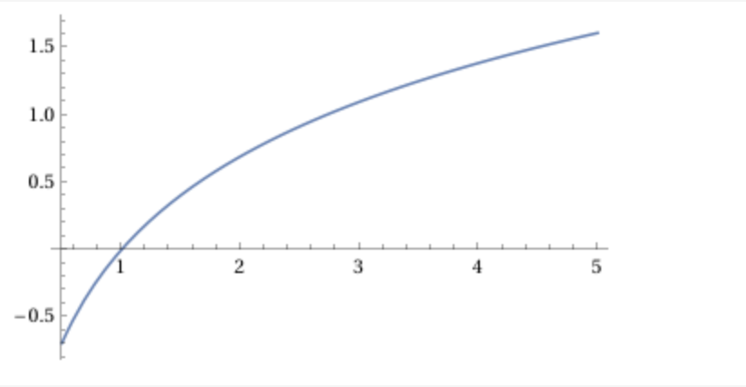

Si \(P=\{a=x_0< \cdots < x_n=b \}\) es una partición del intervalo \([a,b]\)
y \(\alpha:[a,b]\to \mathbb{R}\) es una función monótona creciente,
denotamos \(\Delta_i\alpha=\alpha(x_i)-\alpha(x_{i-1})\),
para \(i=1,\dots. n\).
Si \(P\) es una partición de \([a,b]\) y \(t_i\) son puntos en el intervalo \([x_{i-1},x_i]\),
una suma de la forma
\[
S(f,P,\alpha,\{t_i\}_{i=1}^n)=\sum_{i=1}^n f(t_i)\Delta_i \alpha
\]
se llama una suma de Riemann-Stieltjes de \(f\) con respecto a \(\alpha\).
La idea es similar a la de Arquímides: aproximar
areas complicadas con sumas de "areas de rectángulos", sólo que las "areas de rectángulos"
ya no son precisamente áreas. Las "alturas" son las \(f(t_i)\) pero ahora la
forma de medir la bases cambia. Las longitudes de los intervalos
\([x_{i-1},x_i]\) están dadas
por \(\alpha(x_i)-\alpha(x_{i-1})\), en vez de sólo \(x_i-x_{i-1}\) (la cual
se obtiene justo cuando \(\alpha(x)=x\)).
Ejemplo
La integral de Riemann-Stieltjes trata el problema de saber si las sumas de la forma
\[
S(f,P,\alpha,\{t_i\}_{i=1}^n)
\]
se aproximan, en cierto sentido, a un número cuando las particiones se hacen cada vez más finas.
El primer ejemplo que vamos a ver es cuando \(\alpha(x)=\ln(x)\), con \(x>0\) (la cual
es estrictamente creciente).

Fijamos \([a,b]\subset (0,\infty)\) y \(f:[a,b]\to \mathbb{R}\)
una función continua. Afirmamos que las sumas de Riemann-Stieltjes
\[
S(f,P,\alpha,\{t_i\}_{i=1}^n)
\]
se aproximan, en cierto sentido, al número:
\[
\int_a^b \frac{f(x)}{x}dx.
\]
Una observación importante en este ejemplo es que: \(\frac{d\alpha(x)}{dx}=\frac{1}{x}\).
Ejemplo
El segundo ejemplo es cuando \(\alpha\) tiene una discontinuidad de salto. Fijamos
\(a\in (0,1)\) y vamos a
tomar \(\alpha:[0,1]\to \mathbb{R}\) dada por
\[
\alpha(x)=\left\{
\begin{array}{cc}
0 & 0 \leq x < a \\
1 & a\leq x \leq 1
\end{array}
\right.
\]
Consideramos una función \(f:[0,1]\to \mathbb{R}\). En este caso el
comportamiento de las sumas de Riemann-Stieltjes
\[
S(P,f,\alpha,\{t_i\}_{i=1}^n)
\]
depende de la función \(f\).
Caso 1: si \(\lim_{x\to a^-}f(x)=f(x)\) entonces las sumas \(S(f,P,\alpha,\{t_i\}_{i=1}^n)\)
se aproximan, en cierto sentido, al número:
\[
f(a).
\]
Caso 2: si \(\lim_{x\to a^-}f(x)\ne f(x)\) entonces las sumas \(S(f,P,\alpha,\{t_i\}_{i=1}^n)\)
no convergen.
Definición
Dada una partición de \([a,b]\), \(P=\{x_0 < \cdots < x_n \}\)
y una función acotada \(f:[a,b]\to \mathbb{R}\) definimos
\[
m_i(f)=\inf_{x\in [x_{i-1},x_i]}\{ f(x)\}, \, M_i(f)=\sup_{x\in [x_{i-1},x_i]}\{ f(x)\}.
\]
Dada una función acotada \(\alpha:[a,b]\to \mathbb{R}\), las sumas
\[
\overline{S}(f,P,\alpha)=\sum_{i=1}^n M_i(f)\Delta_i\alpha,
\]
\[
\underline{S}(f,P,\alpha)=\sum_{i=1}^n m_i(f)\Delta_i\alpha
\]
se llaman sumas inferiores y superiores de Riemann-Stieltjes con respecto a \(\alpha\).
Nota que \(m_i(f)\leq M_i(f)\). Entonces si \(\alpha:[a,b]\to \mathbb{R}\) es monótona
creciente, \(\Delta_i\alpha= \alpha(x_i)-\alpha(x_{i-1}) \geq 0\) para toda \(i\) y por
lo tanto
\[ m_i(f)\Delta_i\alpha \leq f(t_i)\Delta_i \alpha \leq M_i(f)\Delta_i\alpha \]
para toda elección de puntos \(t_i\in [x_{i-1},x_i]\) de lo que se sigue que
\[
\underline{S}(f,P,\alpha) \leq S(f,P,\alpha,\{t_i\}_{i=1}^n)\leq \overline{S}(f,P,\alpha)
\]
Proposición
Sean \(f,\alpha:[a,b]\to \mathbb{R}\) funciones acotadas con
\(\alpha\) monótona creciete.
Si \(Q\) refina a \(P\) entonces
\[
\overline{S}(f,Q,\alpha)\leq \overline{S}(f,P,\alpha)
\]
\[
\underline{S}(f,Q,\alpha)\geq \underline{S}(f,P,\alpha)
\]
Para cualesquiera particiones \(P,P'\) de \([a,b]\),
\[
\underline{S}(f,P',\alpha) \leq \overline{S}(f,P,\alpha).
\]
Definición
Sea \(\alpha:[a,b]\to \mathbb{R}\) monótona creciete y \(f:[a,b]\to \mathbb{R}\)
acotada.
Definimos la integral inferior de Riemann-Stieltjes como:
\[
\underline{\int}_a^b fd\alpha=\sup_{P,\{t_i\}}\{ \underline{S}(f,P,\alpha, \{t_i\})\}.
\]
Definimos la integral superior de Riemann-Stieltjes como:
\[
\overline{\int}_a^b fd\alpha=\inf_{P,\{t_i\}}\{ \overline{S}(f,P,\alpha, \{t_i\})\}.
\]
Decimos que \(f\) es Riemann-Stieltjes integrable, con respecto a \(\alpha\) si
\(\underline{\int}_a^b fd\alpha=\overline{\int}_a^b fd\alpha\) y definimos
la integral como este número y la denotamos como
\[
\int_a^b f d\alpha = \underline{\int}_a^b fd\alpha=\overline{\int}_a^b fd\alpha
\]
Por \(\mathcal{R}_\alpha[a,b]\) denotamos al conjunto de funciones
acotadas \(f:[a,b]\to \mathbb{R}\) que son Riemann-Stieltjes integrables
con respecto a \(\alpha\).
Teorema
Sean \(f,\alpha:[a,b]\to \mathbb{R}\) funciones
acotadas con \(\alpha\) monótona creciente. Las
siguientes condiciones son equivalentes.
\(f\in R_\alpha[a,b]\).
Existe un número \(I\) tal que, para toda
\(\varepsilon >0\) existe una partición \(P_\varepsilon\) tal que,
para toda partición \(P\) de \([a,b]\) con \(P_\varepsilon \subset P\)
se cumple
\[
|S(f,P,\alpha, \{t_i\}) - I| < \varepsilon
\]
para toda elección de puntos \(\{t_i\}\) con \(t_i\in [x_{i-1},x_i]\).
(Condición de Riemann)
Para toda \(\varepsilon >0\), existe una partición
\(P_\varepsilon\) de \([a,b]\) tal que
\[
\overline{S}(f,P,\alpha)-\underline{S}(f,P,\alpha) < \varepsilon
\]
para toda partición \(P\) de \([a,b]\) con \(P_\varepsilon \subset P\).
Proposición
Sea \(\alpha:[a,b]\to \mathbb{R}\) una función monótona
creciente. Entonces \(C[a,b]\subseteq \mathcal{R}_\alpha[a,b]\).
Teorema
Linealidad (en el integrando)
Si \(f,g\in R_\alpha[a,b]\) y \(c\) es un escalar, entonces \(f+cg\in R_\alpha[a,b]\) y además
\[
\int_a^b (f+cg)d\alpha= \int_a^b f d\alpha+ c\int_a^b g d\alpha
\]
Teorema
Linealidad (en el integrador)
Si \(f\in R_\alpha[a,b]\) y \(f\in R_\beta[a,b]\) entonces para todo
escalar \(c\), \(f\in R_{\alpha+c\beta}[a,b]\) y
\[
\int_a^b fd(\alpha+ c \beta)=\int_a^b fd\alpha + c \int_a^b f d\beta
\]
Teorema
Sea \(c\in (a,b)\). Si \(f\in R_\alpha[a,c]\) y \(f\in R_\alpha[c,b]\) entonces
\(f\in R_\alpha[a,b]\) y
\[
\int_a^b fd\alpha = \int_a^c f d\alpha + \int_c^b f d\alpha
\]
Teorema
Supón que \(f:[a,b]\to \mathbb{R}\) es continua, que \(\alpha:[a,b]\to \mathbb{R}\)
es monótona creciente, diferenciable con derivada continua en \([a,b]\). Entonces la integral
usual de Riemann, \(\int_a^b f(x)\alpha'(x)dx\) existe y
\[
\int_a^b f(x)d\alpha(x)=\int_a^b f(x)\alpha'(x)dx.
\]
Teorema
Sea \(\alpha:[a,b]\to \mathbb{R}\) monótona creciente, continua por la derecha
con una cantidad finita de discontinuidades de salto. Supongamos que
\(\{a_i\}_{i=1}^m\) son los puntos de discontinuidad de \(\alpha\).
Entonces \(f\in \mathcal{R}_\alpha[a,b]\) si y sólo si
\(f\) es continua por la izquierda en los puntos \(\{a_i\}_{i=1}^m\). Además
en dicho caso
\[
\int_a^b f d\alpha =\sum_{i=1}^m f(a_i)(\alpha(a_i)-\alpha(a_i^-))
\]
donde \(\alpha(a_i^-):=\lim_{x\to a_i^-}\alpha(x)\).
Teorema
Integración por partes
Si \(f\in R_\alpha[a,b]\) entonces \(\alpha \in R_f[a,b]\) y además
\[
\int_a^b f(x)d\alpha(x)+\int_a^b \alpha(x)df(x)=f(b)\alpha(b)-f(a)\alpha(a)
\]
Ejercicio
Calcula las siguientes integrales. Siempre puedes suponer que
para las funciones dadas,
\(f\in R_\alpha[a,b]\).
\( \int_0^3 x^2 d\lfloor x \rfloor\).
\(\int_0^1 x(1-x)dx^3\)
\(\int_{-1}^2 (3x-2)d(\lfloor x\rfloor +2x^2) \).
\(\int_{-\pi}^{\pi}\cos(x)d\sen(x)\).
Nota: \(\lfloor x \rfloor\) denota el mayor entero menor o igual a \(x\).
Ejercicio
Sea \(f:[a,b]\to \mathbb{R}\) tal que \(f(a)=0=f(b)\). Supón que
\(f'\) existe y es continua en \([a,b]\) y que \(\int_a^b f^2(x)dx=1\). Prueba:
\[
\int_a^b xf(x)f'(x)dx=-\frac{1}{2}.
\]
Ejercicio
Evalua:
\(\int_0^1f(x)d\lfloor nx \rfloor\), \(n=1,2,\dots, \) para
\(f:[0,1]\to \mathbb{R}\) continua. Ahora calcula
\[
\lim_{n\to \infty}\frac{1}{n}\int_0^1 f(x)dx \lfloor nx \rfloor
\]
donde \(\lfloor x \rfloor\) denota el mayor entero menor o igual a \(x\).
\(\lim_{n\to \infty} \int_0^b e^{-nx}de^{-x}\).
Ejercicio
Si \(f:[a,b]\to \mathbb{R}\) es continua y no negativa y \(\alpha:[a,b]\to \mathbb{R}\)
y es estrictamente creciente y \(\int_a^b fd\alpha =0\) entonces \(f=0\).
Ejercicio
Si \(f:[a,b]\to \mathbb{R}\) es continua y \(\int_a^b f(x)g(x)dx=0\) para toda
función continua \(g:[a,b]\to \mathbb{R}\) con \(g(a)=0=g(b)\) entonces
\(f=0\).
Ejercicio
Fórmula de la sumatoria de Euler
Si la función \(f(x)\) tiene una derivada continua en \((a,b)\) entonces
\begin{eqnarray*}
\sum_{a< n \leq b}f(n)&=& \int_a^b f(x)dx+\int_a^b f'(x)((x))dx\\
&+& f(a)((a))-f(b)((b))
\end{eqnarray*}
donde \(((x)):=x-\lfloor x \rfloor \).
Cuando \(a\) y \(b\) son enteros lo anterior se vuelve
\[
\sum_{n=a+1}^b f(n)=\int_a^bf(x)dx+ \int_a^b f'(x)(x-\lfloor x \rfloor)dx
\]